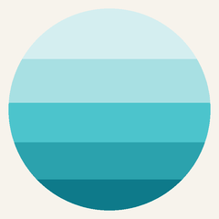

cascade · 3s · 130ms stagger
register · active
Top-down opacity wave.
Triggered while AI is processing or sync is running. Reads as
consulting layers
. ≥32px only — small sizes use a brightness pulse fallback.